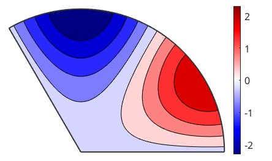
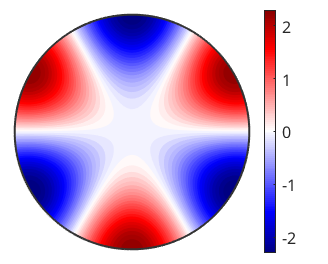
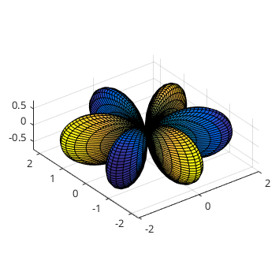
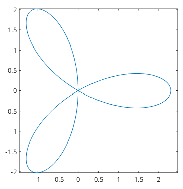
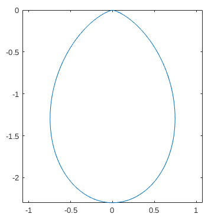
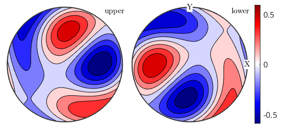
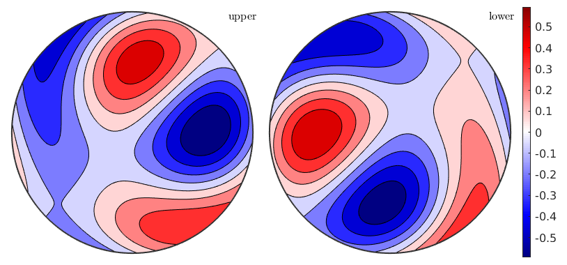

how to work with piezoelectricity
This m-file mainly demonstrates how to illustrate the directional magnitude of a tensor with mtex
| On this page ... |
| Plotting the magnitude surface |
| Mean Tensor Calculation |
at first, let us import some piezo electric contants for a quartz specimen.
CS = crystalSymmetry('32', [4.916 4.916 5.4054], 'X||a*', 'Z||c', 'mineral', 'Quartz'); fname = fullfile(mtexDataPath,'tensor', 'Single_RH_quartz_poly.P'); P = loadTensor(fname,CS,'propertyname','piecoelectricity','unit','C/N','interface','P','DoubleConvention')
P = tensor
propertyname : piecoelectricity
unit : C/N
rank : 3 (3 x 3 x 3)
doubleConvention: true
mineral : Quartz (321, X||a*, Y||b, Z||c)
tensor in compact matrix form:
0 0 0 -0.67 0 4.6
2.3 -2.3 0 0 0.67 0
0 0 0 0 0 0
The default plot of the magnitude, which indicates, in which direction we have the most polarisation. By default, we restrict ourselfs to the unique region implied by crystal symmetry
% set some colormap well suited for tensor visualisation setMTEXpref('defaultColorMap',blue2redColorMap); plot(P) colorbar
but also, we can plot the whole crystal behavior
close all plot(P,'complete','smooth','upper') colorbar
Most often, the polarisation is illustrated as surface magnitude
close all plot(P,'3d')
Note, that for directions of negative polarisation the surface is mapped onto the axis of positive, which then let the surface appears as a double coverage
Quite famous example in various standard litrature is a section thourgh the surface, because it can easily be described as an analytical solution. We just specify the plane normal vector
plot(P,'section',zvector) so we are plotting the polarisation in the xy-plane, or the yz-plane with
plot(P,'section',xvector)
Let us import some data, which was original published by Mainprice, D., Lloyd, G.E. and Casey , M. (1993) Individual orientation measurements in quartz polycrystals: advantages and limitations for texture and petrophysical property determinations. J. of Structural Geology, 15, pp.1169-1187
fname = fullfile(mtexDataPath,'orientation', 'Tongue_Quartzite_Bunge_Euler'); ori = loadOrientation(fname,CS,'interface','generic' ... , 'ColumnNames', { 'Euler 1' 'Euler 2' 'Euler 3'}, 'Bunge', 'active rotation')
ori = orientation size: 382 x 1 crystal symmetry : Quartz (321, X||a*, Y||b, Z||c) specimen symmetry: 1
The figure on p.1184 of the publication
Pm = ori.calcTensor(P) plot(Pm) colorbar
Pm = tensor propertyname : piecoelectricity rank : 3 (3 x 3 x 3) doubleConvention: true tensor in compact matrix form: -40.05 130.64 -90.59 -125.09 -245.39 -100 -68.83 -12.04 80.87 238.45 113.32 169.57 -157.95 154.48 3.47 124.08 -89.48 24.72
close all plot(Pm,'complete','upper') colorbar setMTEXpref('defaultColorMap',WhiteJetColorMap)
| DocHelp 0.1 beta |